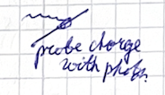
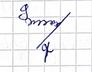
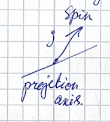
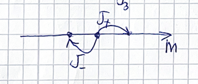
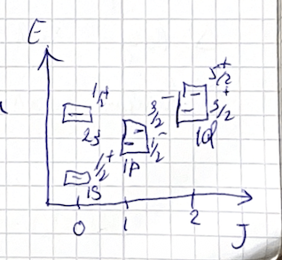

(2024) Lecture 2
Presenter: Mikhail Mikhasenko
Note Taker: Ilya Segal
1 Estimating Hadronic Cross-Sections
A student remarked that someone (perhaps a peer) found last week’s problems too easy, so the professor decided to increase the difficulty. When asked about the problem level, the professor noted that some problems—such as Clebsch‑Gordan coefficients—reappear in multiple courses in particle physics and are very important. There will be a homework this week involving Clebsch‑Gordan coefficients.
Today’s plan: The lecture will cover symmetries in hadron physics. We will start with QCD’s SU(3) color group, then move to the phenomenology of SU(3) flavor by interchanging up, down, and strange quarks. Isospin will be discussed, as well as how the addition of spin relates to adding quarks inside hadrons. The professor will review relevant quantum mechanics material, calling this a “really nice piece of spin algebra”—enjoyable because one can derive it independently without books or the Internet.
Reminder from last lecture: The professor asks a few review questions.
Q: How would you estimate the typical cross‑section of a hadronic reaction—just an order of magnitude?
A: The accurate method involves computing the integral over all possible configurations of the squared matrix element, yielding the exact cross‑section in units of inverse GeV², convertible to cm². For an order‑of‑magnitude estimate, consider the scale of the interaction. A proton’s size is about 1 fm (10⁻¹⁵ m = 10⁻¹³ cm). The effective area is roughly πR^2 , giving 3 × 10^{-26}\ \text{cm}^2 ≈ 30\ \text{mb} (since 1\ \text{b} = 10^{-24}\ \text{cm}^2 ). A typical hadronic cross‑section is around 10\ \text{mb} as a rule of thumb. The strong interaction is very strong but short‑range; if particles are far apart, they do not interact.
Q: How do we get the bottom (the lower bound of the cross‑section)?
A: The unit of cross‑section is the barn. 1\ \text{b} = 10^{-24}\ \text{cm}^2 . The cross‑section estimate gives an area of order 10^{-26}\ \text{cm}^2 = 10\ \text{mb} , which is the typical scale.
The formula \sigma \sim 9\pi r^2 \approx 10\ \text{mb} captures the same order of magnitude, using r = 1\ \text{fm} .
2 Charge Definition in QED and QCD
2.1 Defining Charge in QED

In QED, electric charge is a conserved quantity arising from a symmetry. By Noether’s theorem, there is a conserved current, and the charge is the integral of its zero component:
Q = e\int d^{3}x \; \Psi^{\dagger} \gamma^{0} \Psi = e\int d^{3}x \; j^{0}(x)
The current is j^{\mu} = e\,\bar{\Psi}\gamma^{\mu}\Psi . Since \bar{\Psi} = \Psi^{\dagger}\gamma^{0} , the combination \gamma^{0}\gamma^{0} gives the identity, leaving \psi^{\dagger}\psi , which is a positive quantity for a Dirac field.
If \psi describes an electron, the above expression yields a positive charge — this appears contradictory because we conventionally call the electron’s charge negative. However, the sign is a matter of convention: we define the observed charge as Q=-e . The important fact from field theory is that this quantity is conserved; how we match it to experimental conventions is up to us.
2.2 Defining Charge in QCD
The definition in QCD follows the same logic, but quarks carry a color index and the interaction involves a color matrix. To probe the color charge one inserts the generator T^{a} (a Gell‑Mann matrix) alongside \gamma^{0} :
Q^{a}_{\text{QCD}} = g_{s} \int d^{3}x \; \Psi_{i}^{\dagger}(x)\; \gamma^{0}\, T^{a}\, \Psi_{j}(x)
| Feature | QED | QCD |
|---|---|---|
| Symmetry | U(1) | SU(3) |
| Conserved current | j^{\mu}= e\bar{\Psi}\gamma^{\mu}\Psi | j^{\mu}_{a}= g_{s}\bar{\Psi}\gamma^{\mu}T^{a}\Psi |
| Charge operator | Q = e\int d^{3}x\, \psi^{\dagger}\psi | Q^{a}= g_{s}\int d^{3}x\, \psi^{\dagger}T^{a}\psi |
| Number of charge components | 1 | 8 (index a=1,\dots,8 ) |
The color charge is not a single red, green, or blue value. Instead, a quark state is described by a vector in color space (e.g., (1,2,i) ), and its charge is a vector of eight numbers — the expectation values \langle Q^{a}\rangle for each gluon probe. Depending on which gluon (which a ) is used to probe, one obtains a different charge, all computed from the same formula.
Exam scenario: If given a color state vector, you must return eight numbers: the list of charges measured by the eight different gluon probes.
3 SU(2) Group: Properties, Representations, and Applications
3.1 Group Theory and SU(2)
This discussion comes from group theory, focusing on the groups U(1), SU(2), and SU(3). Today we focus on SU(2).
3.1.1 Definition of a Group
A group satisfies the following properties:
- Closure: For any two elements g_1, g_2 in the group, their product g_1 g_2 also belongs to the group.
- Identity: There exists an identity element .
- Inverse: For every element in the group, its inverse is also in the group.
3.1.2 The SU(2) Group
SU(2) is the group of unitary 2\times 2 matrices with determinant one. For a group element U :
U U^\dagger = U^\dagger U = I,\qquad \det U = 1.
The condition \det U = 1 gives the “S” in SU(2). This is the fundamental representation of the group. Because there are infinitely many such matrices, we can’t list them all, but they compose according to the group law.
3.1.3 Constructing Other Representations
Representations of any dimension can be built from the fundamental one. For each group element in the 2\times2 representation, one can find a corresponding matrix (e.g., 3\times3 or 4\times4 ) that satisfies the same multiplication rules. SU(2) provides a straightforward method to construct representations of any dimension.
3.1.4 Lie Algebra and Generators
All SU(2) group elements can be written in exponential form using generators. The generators are the Pauli matrices divided by 2:
J^a = \frac{1}{2} \sigma^a, \qquad a = 1,2,3.
Any element U \in \text{SU}(2) can be written as
U = e^{i \theta \, \vec{J} \cdot \hat{n}},
where \theta is a rotation angle and \hat{n} is a unit vector. The exponential of a matrix is defined by its Taylor series:
e^{M} = I + M + \frac{1}{2}M^2 + \cdots.
If a matrix squares to zero, the series truncates after two terms: I+M . If it squares to the identity, the series does not truncate quickly—one term remains yielding the identity, while other terms may vanish.
The Pauli matrices are:
| \sigma_1 | \sigma_2 | \sigma_3 |
|---|---|---|
| \begin{pmatrix}0 & 1 \\ 1 & 0\end{pmatrix} | \begin{pmatrix}0 & -i \\ i & 0\end{pmatrix} | \begin{pmatrix}1 & 0 \\ 0 & -1\end{pmatrix} |
3.1.5 Two Important Applications of SU(2)
- Spin – Spin arises from an SU(2) symmetry acting on the Lorentz components of vectors. For a three‑vector, rotations are described by rotation matrices; for a spinor, rotations are described by the Pauli matrices \sigma .
- Flavor Symmetry – Consider quarks in mesons and baryons; transformations between up and down quarks can be performed continuously. This is analogous to describing spinor wave functions—one can have a spinor for the flavor function.
The exponential series behavior: for generators that square to zero or to the identity, the series may simplify. This property is used in explicit calculations.
4 Generators, Charges, and Representations of SU(2)
The rotation group and the flavor group both have conserved charges. In QED the charge is electric charge; in QCD SU(3) it is color charge. For rotations, consider a spinor. A charge can be computed using the sigma matrices (the linear generators of this group). That charge corresponds to the orientation of the spin. As a fermion travels, its helicity is characterized by the projection of the spin onto the direction of motion. The charge gives the three-dimensional direction of the spin: s_1 , s_2 , s_3 for the x , y , z projections.
For the flavor group there is also a conserved charge, computed the same way with the Pauli matrices, but acting on wavefunctions related to quark composition. That charge is called isospin.
| Property | Rotation (Spin) | Flavor (Isospin) |
|---|---|---|
| Group | SU(2) (rotations in 3D) | SU(2) (flavor symmetry) |
| Charge | Spin orientation (helicity) | Isospin |
| Generator | Sigma matrices (Pauli matrices) | Same sigma matrices, acting on quark wavefunctions |

The commutator relation between generators must hold for any representation: [J_i, J_j] = i \epsilon_{ijk} J_k
In the fundamental representation the generators are the Pauli matrices: \sigma_1 = \begin{pmatrix}0&1\\1&0\end{pmatrix},\quad \sigma_2 = \begin{pmatrix}0&-i\\i&0\end{pmatrix},\quad \sigma_3 = \begin{pmatrix}1&0\\0&-1\end{pmatrix}
All generators must be traceless because the determinant‑to‑trace relation forces it. For SU(2) only one generator is diagonal, so the group is called rank‑one. That diagonal matrix ( \sigma_3 ) is used to extract physical quantities from the states.
States are denoted |j,m\rangle with J_3|j,m\rangle = m|j,m\rangle
The quantum number j determines the dimension: 2j+1 possible projections of the spin. For j=1/2 we have the two‑dimensional fundamental representation. The basis states are: |+\tfrac12\rangle = \begin{pmatrix}1\\0\end{pmatrix},\qquad |-\tfrac12\rangle = \begin{pmatrix}0\\1\end{pmatrix}
Any other vector can be expanded in this basis.
We define the ladder operators: J_\pm = J_1 \pm i J_2
with commutation relations: [J_+,J_-]=2J_3,\qquad [J_3,J_\pm]=\pm J_\pm
Their action on a state |j,m\rangle is: J_+|j,m\rangle = \sqrt{(j+m+1)(j-m)}\,|j,m+1\rangle
J_-|j,m\rangle = \sqrt{(j+m)(j-m+1)}\,|j,m-1\rangle
Both J_\pm and J_3 commute with the Hamiltonian and Lagrangian, so they give conserved quantities.
To construct arbitrary representations, the same algorithm is used.
| Dimension 2j+1 | j | Diagonal entries of J_3 |
|---|---|---|
| 2 (spin‑1/2) | 1/2 | +1/2, -1/2 |
| 4 (spin‑3/2) | 3/2 | +3/2, +1/2, -1/2, -3/2 |
| 95 | 47 | 47/2, 45/2, \dots, -47/2 (step 1) |
For a four‑dimensional representation (spin 3/2 ), set up the J_+ matrix with non‑zero elements just above the diagonal, determined by the square‑root coefficients. The J_- matrix is the transpose. Then J_1 = \frac{J_+ + J_-}{2},\qquad
J_2 = \frac{J_+ - J_-}{2i}
and J_3 is diagonal with eigenvalues 3/2, 1/2, -1/2, -3/2 .
This method works for any dimension 2j+1 . For a 95‑dimensional representation, j = 47 , and the diagonal entries of J_3 run from 47/2 down to -47/2 in steps of 1. The full rotation operator is e^{-i\alpha J} . In practice, a computer is used to construct the matrices.
5 The Xi Baryon Family and the Up-Down Quark Symmetry
5.1 Quark content and particles
The quark content SSU (two strange quarks and one up quark) corresponds to the particle \Xi (xi). Each \Xi particle contains two strange quarks and either a u or a d quark.
| Particle | Quark content | Charge states | Properties |
|---|---|---|---|
| \Xi | uss or dss | \Xi^+ (upper), \Xi^0 (lower) | Masses very close; appear as same particle with different charge |
| \Xi_c | usc or dsc | \Xi_c^+ , \Xi_c^0 | Very similar mass and lifetime; well-known discovered particles |
| \Xi_{cc} | ucc or dcc | \Xi_{cc}^{++} (double charge), \Xi_{cc}^+ | One state discovered; the other is actively discussed at conferences |
5.2 The \Xi_{cc} mass puzzle
For \Xi_{cc} , one experiment reported a bump at a certain mass, but LHCb did not find it at that location. When LHCb did observe one of the \Xi_{cc} states, its mass was 40 MeV away from the earlier measurement.
This 40 MeV difference is scandalous. In strong interactions, replacing a u quark with a d quark essentially does not change the mass – the two charge states of \Xi_{cc} should have nearly identical masses. A 40 MeV shift cannot be explained by strong interactions alone, so one of the measurements must be incorrect.
5.3 Blind analyses and current searches
If you do a PhD on data analysis and find this particle, you will become a superstar. Several PhD projects are searching for the missing \Xi_{cc} state. Researchers perform blind analysis: they choose reactions and mass windows, but do not look at that region until all selections and procedures are optimized. Only when everything is fixed do they unblind the data.
Four PhD students did all the work, pressed the button to unblind, and found nothing. The particle likely decays through many channels; current statistics are insufficient to see it in rare modes. The right decay mode may simply not have been identified yet.
5.4 Strong interaction and flavor symmetry
The strong interaction is blind to the difference between u and d quarks. From the PDG, the current masses of the up and down quarks are approximately 3 MeV each. These are the masses before the gluon condensate (i.e., before dressing by the interaction).
For the strong interaction, the near equality of up and down quark masses is crucial. The symmetry that transforms one into the other is essentially exact.
In the QCD Lagrangian, the quark mass term breaks this symmetry if the masses are not equal. Since m_u \approx m_d , the symmetry is good. In contrast, the strange quark mass is 100 MeV, so the up‑down symmetry is only approximate – it is an approximate flavor symmetry.
6 SU(2) Isospin, Combination Rules, and Parity/Charge Conjugation
6.1 Isospin and SU(2) symmetry
Rotations in isospin space form a good symmetry. The cascade particle (the \Xi ) has isospin. If we treat u and d as the two states of the same particle under isospin, the quantum number is I (not L ). The cascade particle is a single state regarding the strong interaction and carries an isospin wave function. The notation “cascade” is the same as \Xi ; historically it was observed decaying in a cascade of particles, so everyone calls it cascade. (see Figure 2)


Isospin works similarly to spin. We have a two‑dimensional vector space in which the group elements act:
U = e^{i \theta \vec{J} \cdot \hat{n}}, \quad J^a = \frac{1}{2}\sigma^a
with the Pauli matrices
\sigma_1 = \begin{pmatrix}0 & 1 \\ 1 & 0\end{pmatrix}, \quad \sigma_2 = \begin{pmatrix}0 & -i \\ i & 0\end{pmatrix}, \quad \sigma_3 = \begin{pmatrix}1 & 0 \\ 0 & -1\end{pmatrix}.
The doublet corresponds to the two components, so the representation has dimension 2 , i.e. isospin 1/2 . For the up state we have I_3 = +1/2 ; for the down state I_3 = -1/2 .
|+\tfrac12\rangle = \begin{pmatrix}1 \\ 0\end{pmatrix}, \quad |-\tfrac12\rangle = \begin{pmatrix}0 \\ 1\end{pmatrix}
A multiplet of four dimensions corresponds to isospin 3/2 ; for 95 dimensions it would be isospin 47 .
6.1.1 Combining multiple quarks
How do we obtain higher representations if we only have two quarks ( u and d )? By combining more than one quark. Higher‑dimensional representations appear when we consider systems of more than one quark. We then have to contend with the Pauli principle, but here we treat two particles as a combined system and characterize the total system by total spin or total isospin and its projection.
For SU(2) the combination rules are the same as for angular momentum:
\frac12 \otimes \frac12 = 1 \oplus 0
j_1 \otimes j_2 = |j_1-j_2| \oplus \cdots \oplus (j_1+j_2)
Think of two vectors: you have one vector with length j_1 and another with j_2 . The resulting vector can have different lengths depending on the angle between them, but there are minimal and maximal values and all intermediate ones are possible. So combining spin‑ 1/2 and spin‑ 1/2 gives total spin 0 or 1 .
Now another example: combine spin 3 and spin 2 . The possible total spins are 5,4,3,2,1 . The dimensions: spin 3 has 7 states, spin 2 has 5 , product 35 ; the decomposition yields dimensions 11,9,7,5,3 – again sum 35 . The dimension on both sides is the same, which is a nice consistency check.
Group theory tells us these irreducible blocks do not mix: a matrix acting on the 35 ‑dimensional space rotates components within each block but never connects different total‑spin sectors. This is what a representation means physically – under rotations the total spin is preserved, so the representation is block‑diagonal.
6.1.2 Parity and charge conjugation
The parity operator P performs space inversion: P\psi(\vec{r}) = \psi(-\vec{r}) . Acting twice returns the original state, so the eigenvalue is \pm1 (by convention real). The charge‑conjugation operator C flips all charges: it takes a particle to its antiparticle. For a neutral particle that is an eigenstate of C , the eigenvalue is \pm1 ; for a charged particle like \pi^+ , C transforms it to \pi^- , so it is not an eigenstate, but we still assign the C parity of the neutral member of the multiplet for convenience.
For any particle you can look up its J^{PC} quantum numbers (total spin, parity, charge conjugation). For example, the \pi^0 has
J^{PC}(\pi^0)=0^{-+},\qquad I=1
6.1.3 Combining two particles
To find the J^{PC} of a composite system:
- Determine the total J by adding spins and orbital angular momentum.
- Parity is multiplicative: P = P_1 P_2 (-1)^L .
- Charge conjugation is multiplicative where defined.
For fermion‑antifermion systems there is no charge conjugation for the individual fermions, but the pair can have a well‑defined C .
The following table lists the possible J^{PC} for different combinations of L and total spin S for a fermion‑antifermion pair (using the rules P = (-1)^{L+1} and C = (-1)^{L+S} ).
| L | S | J^{PC} |
|---|---|---|
| 0 | 0 | 0^{-+} |
| 0 | 1 | 1^{--} |
| 1 | 0 | 1^{+-} |
| 1 | 1 | 0^{++},\ 1^{++},\ 2^{++} |
| 2 | 0 | 2^{-+} |
| 2 | 1 | 1^{--},\ 2^{--},\ 3^{--} |
| … | … | … |
Start with orbital angular momentum L=0 , total spin S=1/2 for a fermion‑antifermion pair? Actually the simplest case is a fermion and an antifermion: their total spin can be 0 or 1 , and with L=0 the parity is (-1)^0 = +1 times the intrinsic parities (fermion‑antifermion parity product gives -1 for the pair). The allowed J^{PC} values follow the rule P = (-1)^{L+1} and C = (-1)^{L+S} . By adding one unit of orbital angular momentum, the parity flips sign; adding two units keeps the parity the same. Proceeding inductively, we obtain a series of J^{PC} assignments. This is one of the most important skills: being able to determine the possible spin–parity combinations when combining two particles.
7 Excitation Spectrum and Quark Model of the Λc
The excitation spectrum for \Lambda_c has a cusp.
7.0.1 \Lambda_c in the quark model
In the quark model the heavy quarks are considered. There are no gluons; they all condense. The quarks are heavy. Among them there is a heavy charm quark that is not part of the symmetry. There are up and down quarks from the flavor SU(3) group. The two light quarks can be combined into isospin 1 (symmetric) or isospin 0 (antisymmetric). That is how we combine the isospin – the flavor part of the group.
Since the two light quarks are identical, they must be in a symmetric total state. If the isospin is zero, the flavor wavefunction is antisymmetric:
\frac{ud - du}{\sqrt{2}}
Therefore the spin combination must also be antisymmetric, i.e., spin 0. The two light quarks are spin‑½, so their combined spin obeys: \frac12\otimes\frac12 = 1\oplus0 . The antisymmetric spin is the singlet ( S=0 ).

For the baryon’s total wavefunction, fermions require antisymmetry. Color gives a factor -1 . As we found for the H‑dibaryon, the S‑wave spin wavefunction is symmetric. The isospin‑0 and spin‑0 combination is symmetric, which together with the antisymmetric color yields an overall antisymmetric wavefunction. The lecturer notes a missing minus sign somewhere, but the reasoning is correct.
Because the isospin is zero, there are no other particles in this multiplet; there is only one \Lambda_c . (see Figure 2)
| Type of excitation | Description | Example state(s) |
|---|---|---|
| Ground state | L=0 , no radial nodes | \Lambda_c |
| Radial excitation | Like hydrogen, principal quantum number n increases size; analogous to 1s, 2s, … | \Lambda_c^{**} (broad) |
| Orbital excitation | L=1 (P‑wave) between the light diquark and the charm quark | Two states from L=1 (e.g., different total J ) |
7.0.2 Excitations of \Lambda_c
One way to create different particles is to interchange the up and down quarks, but since the isospin is zero this gives no new states.
The other way is to excite the system.
Radial excitation: like a hydrogen atom, the principal quantum number n tells the size and the orbitals. The ground state is \Lambda_c ; the first radial excitation would be \Lambda_c^{**} . This state has been found; it is rather broad.
Orbital excitation: introduce orbital angular momentum L between the light diquark (the ud pair) and the heavy charm quark. These give P‑wave states. The ground state has L=0 , and orbital excitations have L=1 .
Each excitation corresponds to a different particle. In the PDG we find around seven \Lambda_c states:
- the ground state,
- two from radial excitation,
- two from orbital excitation,
- one more,
- and a higher state whose multiplet assignment is uncertain.
Although they are listed as distinct particles, they are all excitations of the ground state \Lambda_c .
Learn how to construct tables like this and how to perform spin algebra. Constructing S‑wave ( L=0 ) states using Clebsch‑Gordan coefficients is straightforward. Adding one unit of orbital angular momentum is also straightforward. One must not confuse the procedure. If the ground state already has orbital angular momentum zero, there are few possibilities – you must treat each case separately. One type of excitation leads to multiple states, and another type leads to other multiplets.
7.0.3 Decay partial wave determination
The same reasoning applies to decays, e.g., A \to B + C . Suppose the quantum numbers are:
- A : 0^+
- B : 1^- (vector)
- C : 2^- (tensor)
In the rest frame of A , B and C emerge back‑to‑back. We determine the orbital angular momentum L in the decay using conservation of parity and angular momentum.
Parity: The intrinsic parity product of B and C is (-1)(-1)=+1 . Parity conservation gives:
P_A = P_B P_C (-1)^L \quad\Longrightarrow\quad + = (+)(-1)^L
Hence L must be even.
Angular momentum: J_A = 0 must equal the vector sum \vec{L} + \vec{S} , where \vec{S} is the total spin of B and C . Combining spin‑1 and spin‑2: 1\otimes2 = 1\oplus2\oplus3 (using j_1\otimes j_2 = |j_1-j_2| \oplus \cdots \oplus (j_1+j_2) ). So S can be 1 , 2 , or 3 . Only an even L that can cancel S to give total J=0 is L=2 (D‑wave). Therefore the decay proceeds via D‑wave.
This skill of constructing such tables and performing the algebra is very important – practice it.
7.0.4 Problem: Hydrogen in a strong magnetic field
Consider a hydrogen atom in a strong magnetic field. What is the excitation spectrum? Consider levels with principal quantum number n < 3 :
- 1s, 2s, 2p, 3s, 3p, 3d (including n=3 to make it more interesting, but excluding f‑waves).
Neglect both the proton and electron spins. Draw the energy spectrum as a function of the magnetic field. This is a beautiful puzzle (you may have seen it before).
Thank you for coming. See you next time. If you have questions or suggestions, you can stop by or share them anonymously with Ilya and R. Please let me know if there are other students who were not present, so I can give them the problem set.